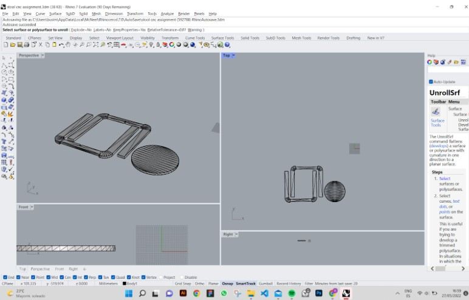
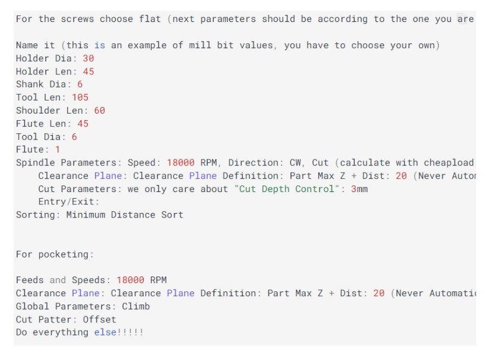

During the class, I decided to use Rhino and Rhino CAM to complete my assignment, which was a chair. According to the class documentation and consulting past documentation, these are the steps for CNC Milling:

This is the Model of the chair designed.
Rhino CAM workflow
Select the Post processor. In this case Haas was chosen, which uses the standard G-Code for 3 axis CNC_STEP_BCN. The post processor file extension is nc Machine Setup and Stock Box Machine setup allows co-ordination system, so the file is aligned in a specific way. In the box stock I assigned the LHW of the milling job Select and define the material as wood Set up the work co-ordinates to x:0 y:0 and z:0 so that the co-ordinates of the file match of those to the machine Asign A Tool
1.Prepare the Mill Module
2. Machine Strategy
Based on the size and geometry of the stool, the model will be made from a plywood sheet of 846mm and 340mm and 11.92mm thick. Considering the RhinoCAM instruction manual and the resources of the Fab Lab, a flat end mill, which will be held on the machine table held down by screws.
3. Asign A tool
followed the set up from the Fab Academy documentation and set up a flat mill tool as follows above:

This is the tool set up parameters I followed from the class explainations
Using RhinoCAM these were the setting I used to set up the machine
After setting up the milling screws and the file on RhinCAM, I moved on to the CNC machine. The set up was the longest process and most complex. The fablab faculty was there to help set up the end mills. In conclusion, The most difficult part of the project was making sure the file and cutting process was precise, consistently setting up the mill screws. It was enlighting to see how much CNC is used in industry, and that such a heavy duty way of making could be embraced and used to make anything from Plywood.